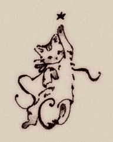

A solid 5-pointed black star situated at the composition's apex, acting as the visual anchor and narrative catalyst.
Elongated torso and raised paw create a dynamic vertical axis, embodying aspirational momentum.
Sinuous, flourish-heavy ink loops forming monogrammatic forms integrated directly into the feline lower body.
1. Anatomy of an Emblematic Vignette
In the golden age of book design—spanning the late Victorian and Edwardian eras—the boundary between text and illustration was fluid. Small, unbordered decorative drawings known as vignettesA small ornamental design or illustration that fades softly into the surrounding page without a definite border. served not merely as embellishments, but as atmospheric punctuation marks for chapters, title pages, and colophonsA publisher's emblem or statement at the end or beginning of a book detailing publication details..
The featured artifact (Figure 1) exemplifies the pinnacle of this miniature craft. Rendered with fine-dip steel pen, carbon ink, and delicate ink-wash stippling, it depicts a young tabby cat reaching vertically toward a solitary five-pointed star. Beyond its immediate narrative charm, the piece represents a sophisticated interplay of calligraphic abstraction and figurative representation.
2. The Geometry of the Calligraphic Paraph
What elevates this illustration beyond standard animal sketchwork is its structural integration of paraphsA flourish added to a signature or letterform, historically used to prevent forgery and add aesthetic flair.—calligraphic loops extending from the lower body. The base features two prominent curves resembling the cursive letters "S" and "C" (or "O"), suggesting this may have originated as a publisher's device or personalized bookplate monogram.
The lower flourishes follow the logarithmic curve characteristic of traditional copperplate penmanship. The balance of the visual weight can be modeled mathematically through logarithmic spiral growth:
Where \(r\) represents the radial distance from the origin of the curve, \(\theta\) is the angle of rotation, and \(b\) governs the expansion rate of the flourish. The artist balances the heavy leftward loop \( r_{\text{left}}(\theta) \) with a light, counterbalancing trailing ribbon stroke on the right, ensuring visual stability despite the figure's intense upward kinetic energy.
Notice how the vector defined by the kitten's eye line coincides with the angle of the extended forelimb. This double-vector points directly to coordinates \((x_{\text{star}}, y_{\text{star}})\), compelling the reader's gaze to travel upward from the heavy textual base to the celestial apex.
3. Historical Print Context & Technical Execution
To understand how artwork of this fidelity was reproduced at scale around the turn of the 20th century, we must examine the evolution of graphic reproduction technologies.
Line Etching & Photomechanical Process
By the 1890s, relief line etching (photolithography) allowed artists' original pen-and-ink line drawings to be photographically transferred to zinc or copper plates. Unlike earlier wood engravings—where a craftsman had to physically cut away negative space around the artist's lines—photolithography preserved every minute nuance of the artist's natural hand pressure and ink pooling.
Shading Techniques: Wash vs. Cross-Hatching
The artist employs a dual shading technique: crisp hatching lines define the striped fur patterns on the forehead and ears, while a thinned diluted ink wash (or fine stippling) provides volumetric modeling across the abdomen and paws. This hybrid method ensured depth without cluttering the compact visual footprint.
The Anthropomorphic Tradition (Potter to Rackham)
The stylistic framing aligns closely with the works of Beatrix Potter, Ernest H. Shepard, and Louis Wain. During this era, animal illustrations shifted away from rigid zoological accuracy toward expressive emotional surrogacy—using naturalistic animal anatomy to evoke universal human sentiments such as ambition, wonder, and innocence.
Estimated Period: c. 1895 – 1915
Stylistic Classification: Edwardian Book Ornamentation / Calligraphic Vignette
Key Motifs: Monogram Synthesis, Celestial Aspiration, Tabby Markings
4. Legacy in Modern Visual Identity
While created over a century ago, the visual techniques present in this simple vignette offer profound lessons for modern visual identity, logo design, and micro-branding:
- Monogram Seamlessness: Integrating brand letterforms directly into character silhouettes reduces visual noise while doubling semantic meaning.
- Asymmetrical Balance: Utilizing dynamic curves to offset a single focal point creates organic, lifelike movement.
- Micro-Illustration in Modern UI: Modern UI empty states and micro-interactions inherit directly from the functional role of the 19th-century chapter vignette—delighting users during transitional moments.